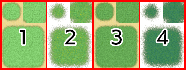

RPG TKOOL MZ HELP
資料集

素材規格
RPGツクールMZでは、画像やオーディオなどあらゆる素材にオリジナルのファイルを使用することができます。
該当のフォルダに素材ファイルをコピーすることで、エディターから選択できるようになります。
各素材フォルダの配下には、サブフォルダを追加し、参照することができます。フォルダ名は半角英数字を推奨します。
画像素材
すべてPNGファイルで用意します。
-
戦闘背景(img/battlebacks1,img/battlebacks2)
バトル画面の背景として使用する画像です。
サイズは1000×740で、battlebacks1には主に床の絵、battlebacks2には主に壁の絵を描き、それを任意に組み合わせて戦闘背景とします。
フロントビュー戦闘では画像の上部分が、サイドビュー戦闘では画像の下部分がトリミングされて表示されます。 -
フロントビュー用 敵キャラクター(img/enemies)
フロントビュー戦闘で表示する敵キャラの画像です。サイズは任意です。
※画像サイズの幅(水平方向)が奇数のものは仕様上ぼやけて表示される可能性がございます。偶数を推奨いたします。 -
顔画像(img/faces)
メニュー画面やメッセージウィンドウで表示する画像です。
顔画像1枚あたり144×144の画像を、横に4枚、縦に2枚の計8枚分並べたものを1ファイルとします。 -
マップ遠景(img/parallaxes)
マップの奥に表示する画像です。サイズは任意です。
ループさせたい場合は、いわゆる壁紙のように上下左右がつながるように作成します。
また、遠景のファイル名の先頭文字が［!］のときは、床（視差ゼロ）として扱われます。 -
ピクチャ(img/pictures)
ゲーム中にイベントコマンドを使って表示するための画像です。サイズは任意です。
※画像サイズの幅(水平方向)が奇数のものは仕様上ぼやけて表示される可能性がございます。偶数を推奨いたします。 -
サイドビュー用 味方キャラクター(img/sv_actors)
サイドビュー戦闘で表示するアクターの画像です。
［サイドビューキャラ規格］を参照してください。 -
サイドビュー用 敵キャラクター(img/sv_enemies)
サイドビュー戦闘で表示する敵キャラの画像です。サイズは任意です。
※画像サイズの幅(水平方向)が奇数のものは仕様上ぼやけて表示される可能性がございます。偶数を推奨いたします。 -
タイルセット(img/tilesets)
マップを構成するタイル（いわゆるマップチップ）を収めた画像です。
-
タイトル画面(img/titles1,img/titles2)
タイトル画面で表示する画像です。
サイズは816×624で、titles1にはメインの背景、titles2には枠などを描き、それを任意に組み合わせてタイトル画面とします。 -
歩行キャラクター(img/characters)
マップ画面上で表示するキャラクターの画像です。
1キャラクターあたりのサイズは任意（基準は48×48）で、4方向（下、左、右、上）×3パターンの計12パターンを規定の順序で並べます。この1キャラクターを、縦に2体、横に4体の計8体分並べたものを1ファイルとします。1キャラクターのサイズは、この1ファイルの、幅の1/12、高さの1/8から算出されます。なお、建物との重なりをより自然に見せるために、キャラクターがタイルから上に1/8ぶんずれて表示されます。- ファイル名の頭に"$"をつけることで、1キャラクター＝1ファイルとして扱うことができます。
- ファイル名の頭に"!"をつけることで、1/8ぶんずれる仕様が適用されなくなり、茂み属性による半透明処理の影響も受けなくなります。主にドアや宝箱といったマップのオブジェクトタイプのキャラクターに使用します。
- 特殊文字"$"と"!"は併用も可能です。
-
システム画像(img/system)
ゲーム全体で使用するための様々な画像です。
- Balloon.png
- アクターのフキダシアイコンに使用する素材です。画像下の透明部分はユーザー定義枠となっています。
- ButtonSet.png
- タッチ操作で使用するボタンの素材です。 メニューの開閉、キャンセル操作、一つ前に戻る操作、アイテム購入時の個数の操作などに使用します。
- GameOver.png
- ゲームオーバー画面に表示される素材です。
- IconSet.png
- アイテム、武器防具、スキルなどでアイコンに使用される素材です。
- Shadow1.png
- 飛行船に乗っているときに表示される影の素材です。
- Shadow2.png
- サイドビュー戦闘用の味方キャラの影の素材です。
- States.png
-
サイドビュー戦闘用の味方キャラの状態を表す素材です。
- Weapons1.png, Weapons2.png, Weapons3.png
-
サイドビュー戦闘で、味方キャラが通常攻撃をするときに表示される武器の画像です。
Weapons1、Weapons2には12種、Weapons3には6種の画像を収めます。Weapons3はユーザー定義枠となっています。 - Window.png
- ウィンドウを構成する画像をまとめた素材です。
タイルセット詳細
タイル1個あたりは48×48で、これらを以下の規則に従ってA～Eの5種類のセットにまとめる必要があります。
なお、データベース［タイルセット］の［モード］に設定した内容によって、仕様が変化するものがあります。
タイルセット A
マップ描画の際に、下層扱いとなるセットです。このセットはさらに細かく5つのタイルにわかれており、ほとんどのタイルは"オートタイル" と呼ばれる、境界線が自動的に作成される特殊なタイルによって構成されています。
オートタイルは、原則として下図のような並びのタイル6個のパターンが基本構造となります。
-
a
代表パターン(タイルパレット表示用)
-
b
四隅に境界を持つパターン
-
c
集合パターン(8方向の境界と中央でひとまとまりの対象を表す)

オートタイルの画像で、右下から(8,8)の位置が透明だった場合、そのオートタイルは“森タイプ”と判定されます。森タイプのオートタイルに茂み属性がつけられた場合、右下隅と左下隅の境界線を含む以下の8種類のタイル上では歩行画像が半透明になりません。
A1(アニメーション)
サイズは768×576です。右図のように5パターンのブロックを組み合わせて構成します。基本的に、このタイル同士は、隣接しても境界線が作成されません。
小型船・大型船での通行が可能なのは、このタイルのみです。ただし、歩行できるようにタイルセットで通行設定された場合は、小型船・大型船で進入できなくなります。
-
ブロック A
海タイルとして使われるオートタイルです。オートタイル基本構造のパターンを3つ横に並べて配置することで、アニメーションさせることができます。
-
ブロック B
深海タイルとして使われるオートタイルです。このブロックのタイルのみ、A1(アニメーション)のタイルと隣接したときに海タイルの境界線が作成されます。また、このブロックの透明色部分には、ブロックAのタイルが自動的に補完されます。ブロックAと同じく、オートタイル基本構造のパターンを3つ横に並べて配置することでアニメーションさせることができます。なお、このブロックのタイルは、小型船での通行ができません。
-
ブロックC
ブロックAの海タイルを装飾するオートタイルです。このブロックの透明色部分には、ブロックAのタイルが自動的に補完されます。なお、このブロックのタイルは、小型船・大型船での通行ができません。
-
ブロックD
水タイルとして使われるオートタイルです。オートタイル基本構造のパターンを3つ横に並べて配置することでアニメーションさせることができます。
-
ブロックE
滝タイルとして使われます。横方向に2個のタイルで集合パターンを形成し、3つ縦に並べて配置することでアニメーションさせることができます。なお、このブロックのタイルは、小型船・大型船での通行ができません。
A2(地面)
サイズは768×576です。上図のように2パターンのブロックを組み合わせたものを、縦に4つ並べて構成します。このタイルのみ、データベース［タイルセット］の［モード］に設定した内容によって、仕様が変化します。
このタイルにカウンター属性がつけられた場合、テーブルを表現するオートタイルとして使われ、配置した際にパターン下端の12ドット分が下にずれて表示されます。

-
ブロックA(フィールドタイプ)
4パターンのオートタイルで構成され、実際のタイルセットでは、1のみ、1と2が重なったもの、3のみ、3と4が重なったものとして扱われます。

↓

-
ブロックB(フィールドタイプ)
4つのパターンを収めることができ、実際のタイルセットではブロックAのタイルと重ねて配置できる特殊仕様のタイルとなります。
-
ブロックA(エリアタイプ)
4つのパターンを収めることができ、実際のタイルセットではブロックBのタイルと重ねて配置できるタイルとなります。
-
ブロックB(エリアタイプ)
4つのパターンを収めることができ、実際のタイルセットではブロックAのタイルと重ねて配置できるタイルとなります。
A3(建物)
主に建物の外観として使われるオートタイルです。サイズは768×384で、オートタイルの集合パターンのみで形成されたものを、横に8つ、縦に4つ並べて構成します。
このタイルは、マップ描画時に縦方向にふたつ以上並べて配置することで、隣接する右側のタイルに影が自動生成されます。ただし、その隣接したタイルがA2(地面)(ブロックCを除く)かA5(通常)以外のものだった場合、影の自動生成は行なわれません。
A4(壁)
主に壁として使われるオートタイルです。ダンジョン生成の壁にも使用されます。サイズは768×720です。オートタイル基本構造と、オートタイルの集合パターンのみを縦に並べたものを、横に8つ、縦に3つ並べて構成します。
このタイルは、マップ描画時に縦方向にふたつ以上並べて配置することで、隣接する右側のタイルに影が自動生成されます。ただし、その隣接したタイルがA2(地面)(ブロックCを除く)かA5(通常)以外のものだった場合、影の自動生成は行なわれません。
A5(通常)
サイズは384×768で、この中にタイルを8×16個並べてください。このファイルに収められているタイルは、すべて通常タイル扱いとなります。上から3、5、7行目のタイルはダンジョン生成の床にも使用されます。
タイルセット B ～タイルセット E
マップ描画の際に、上層扱いとなるセットです。
それぞれサイズは768×768で、この中にタイルを16×16個並べてください。
- タイルセット Bの一番左上のタイルは、上層に何も置かれていない状態を表すため、必ず空白にしておきます。
タイルサイズ変更時の規格
システム2でタイルセットのサイズを変更した場合の規格は次の通りです。
[32×32]
| A1,A2 | 512×384 |
|---|---|
| A3 | 512×256 |
| A4 | 512×480 |
| A5 | 256×512 |
| B,C,D,E | 512×512 |
[24×24]
| A1,A2 | 384×288 |
|---|---|
| A3 | 384×192 |
| A4 | 384×360 |
| A5 | 192×384 |
| B,C,D,E | 384×384 |
[16×16]
| A1,A2 | 256×192 |
|---|---|
| A3 | 256×128 |
| A4 | 256×240 |
| A5 | 128×256 |
| B,C,D,E | 256×256 |
オーディオファイル（音楽、効果音）
オーディオファイルは下記の保存形式で保存してください。
- Ogg Vorbis(.ogg)
メタデータにLOOPSTART、LOOPLENGTHという値が埋め込まれていると、その数値に対応するサンプル位置をリピートの範囲として認識します。
ビデオファイル（ムービー）
実行環境によって再生できるファイル形式が異なるため、下記2種類のファイルを同じファイル名で用意してください。
- WebM(.webm)
- MP4（.mp4 H.264コーデックでエンコードされたもの）
※WindowsまたはMacでプレイするゲームを制作する場合はWebM形式のファイルのみ用意してください。Web上で公開する場合は両方のファイルが必要になります。